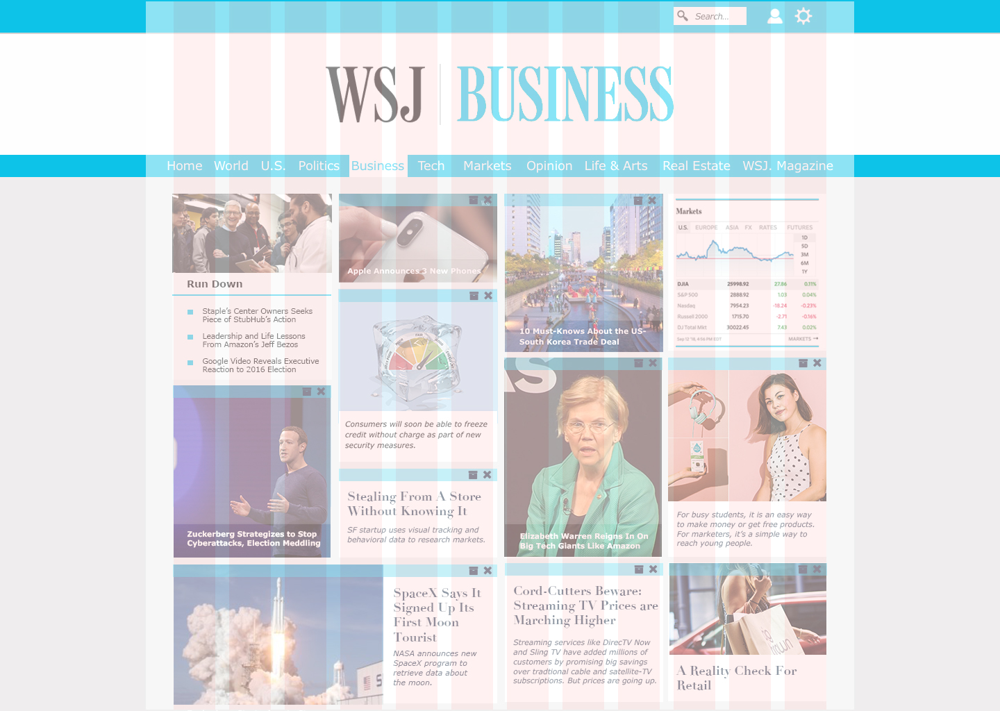
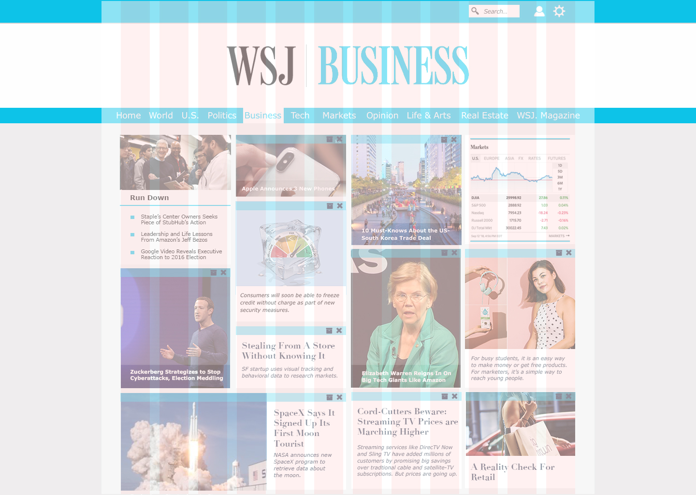
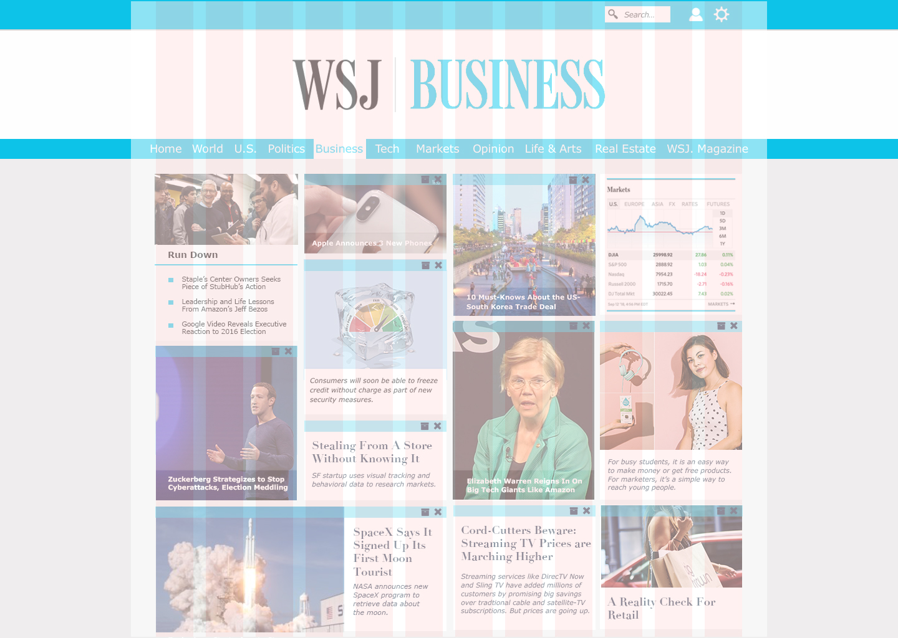

The main point of this project was to learn how to explore new ideas while working around constraints such as the grid design, as well as taking an article-heavy site and making it easier to use. In order to stick to our one-week deadline, my team and I did a shortened version of the UX/UI process. Through competitive analysis and a few user interviews, we came up with our unique, simplified design.
The main characteristics of our design included a way to personalize user's filters - determining which article sections showed up on the user's feed, and a static page that refreshed the articles as users saved or removed them. Another important aspect was the "run-down feature," which would show a bulleted list of the section's biggest news.
Group Members: Kailyn Brush, Daniel Garrison, Jessica Milburn
Discover
Due to the limited time frame, my group chose to focus on competitive analysis and a few basic interviews to discover what was most important to users. The team members came to this project with different views regarding news sites, so that's where we started - the "why," "why not," and "how" the individual team members used news sites and what characteristics or features would help improve this use. With this information, we decided on which target audience to focus on and the best ways to incorporate their needs into the new designs.
Define
The team needed to simplify the pain points for the users we were targeting to focus on those problem areas that we could address within the time frame allotted.
Problem Areas
People didn't have time to read all the articles to get to the news that was important to them.
A lot of the users reading/using news articles are busy people with demanding jobs, so they don't always have the time to read all the articles. They also needed to stay relevant in order to connect with others over important issues.
Attracting new, younger users required a new feature and less clutter.
A lot of news articles weren't reaching the younger generations. We learned a lot of this was caused by cluttered sites with feeds that seemed endless. Also, many younger users didn't want to have to read through a lot of stuff to find articles they were interested in and they didn't have a lot of motivation to try to stay caught up on the news.
People wanted to filter out the news they didn't consider important.
A lot of the users had certain sections of the news site that they didn't ever read or utilize. In order to declutter the space, we decided to find a way to eliminate these sections so that the site would seem less claustrophobic.
Character Profiles
Because this time line was short, we eliminated the step of creating a user profile. We chose to design for the users currently using the site, as well as the younger generation of millennials. To determine the average demographics of the users we conducted our research through the site itself as well as google analytics.
Develop
Having defined the problem, we moved into developing the solution.
The Process:
Mobile
Desktop
A&B Testing
Through the testing our solutions seemed to be on the right track. The Run-down seemed to be the top favorite, with the light, open, clutter-free view being a close second. Most users liked the ability to eliminate articles on the screen, but weren't sure how the feature would work.
"I love the run-down feature. I never have time to find/read the important stuff."
"I like the idea of swiping to get rid of the articles I don't want to read. But I would need to see it just ot be sure."
"I love this design a lot; less cluttered and much better looking than the old one."
Deliverables
High-Res Wireframes
The final product was the high-resolution wireframes. We had no way to test the elimination feature; however, the way we set up the page would allow for typical page scrolling to also happen. In further iterations of this project, the elimination feature would be one of the first functions we would test.
Mobile
Desktop

Moving Forward with this project
There is no one solution to any problem, just as there is never just one solution. People and sites continue to evolve and change. The following is what I would do if I were to continue to work on this project:
With a longer time frame, I would develop a character profile and conduct additional research. User testing would also be the next step after creating a working prototype.


 
